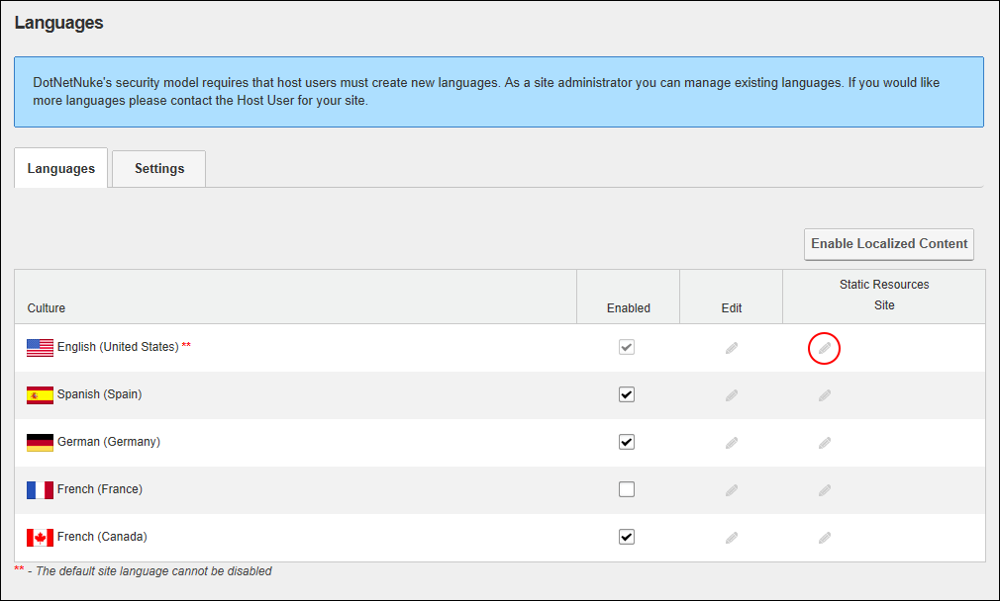
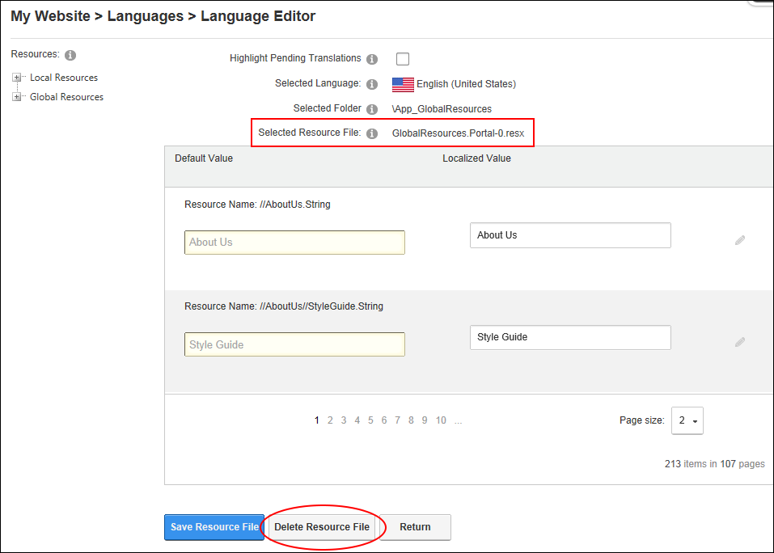

How to delete the resource file associated with a Language Pack on your site using the Languages module. The Resources folder list contains the Local and Global resources sub-folders. The Local Resources folder includes files that are related to specific Admin controls, modules (desktop modules), controls, installation and Host skins. The Global Resources folder includes files that are used across the site. This is divided into Exceptions, GlobalResources, SharedResources and WebControls. Note: The GlobalResources sub-section is where you can edit system messages which are sent to users, error messages, site messages, etc. DNN Platform users (including anonymous users) must be granted Edit Module permissions. Evoq Content users (including anonymous users) must be granted Edit Content permissions.

